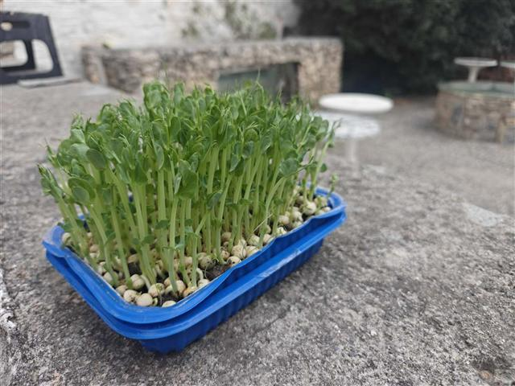
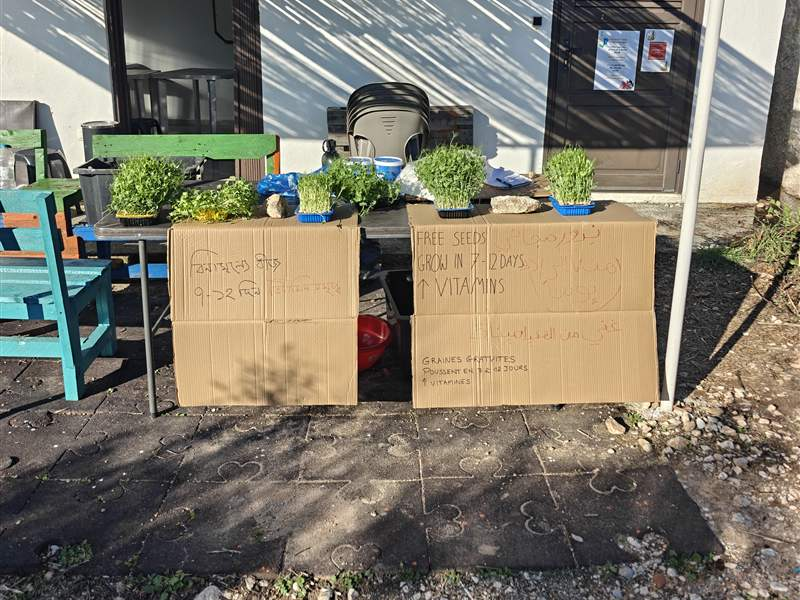
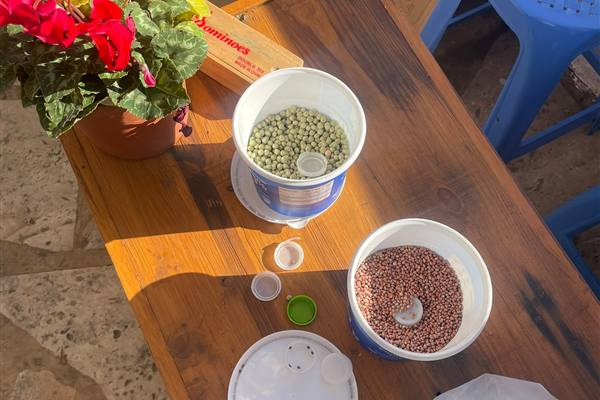
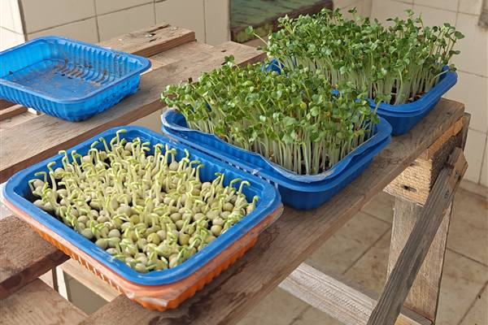

For organisations in Greece · November 2026
Invitation to pilot: low-cost homegrown microgreens
Why?

Microgreens are an extremely nutrient-dense crop, and can help supplement the calorie-rich but un-diverse diets catered to refugees in Greek camps.
A home-grown intervention drives cost down, gives people more control over their diets, and combats idleness in refugee camps.
Video tutorials

We built video tutorials in the languages most spoken by refugees in Greece. In the videos, we demonstrate how to use recycled materials easily found in camp settings, such as disposable boxes from mealtimes.
- English
- العربية (Arabic)
- فارسی (Farsi)
- Français
- Türkçe
- বাংলা (Bengali)
- Ελληνικά (Greek)
Our offer

We want to partner with grassroots organisations across Greece to make healthy foods available to refugee communities.
We are offering to post up to 4kg of free seeds to trial, enough to sow about 390 boxes of microgreens. Shipping costs within Greece should amount to less than €15.
After a pilot period, with enough interest we can look into securing discounted seed prices to make this sustainable, or secure funding to keep the programme running.
If taking part in this pilot is of interest to you, please write to us at hello [at] fromseedtoshelter [dot] com.
Cost per person, post-pilot
If your organisation were to run a sustained programme following the pilot period, it would have costs in this ballpark:
€0.02 per person a day, for two 10g servings: about €0.50 a month
€0.06 of seed per radish box, which yields about 58g
€0.17 of seed per pea box: about 218g over two harvests, as it regrows
Two servings a day, one radish and one pea, at lunch and dinner, meet this share of a person's minimum daily needs under the Sphere standards:
| Vitamin | From two servings | Share of minimum |
|---|---|---|
| A | 70 μg | 13% |
| C | 12.7 mg | 31% |
| E | 4.9 mg | 62% |
| K | 41 μg | 85% |

